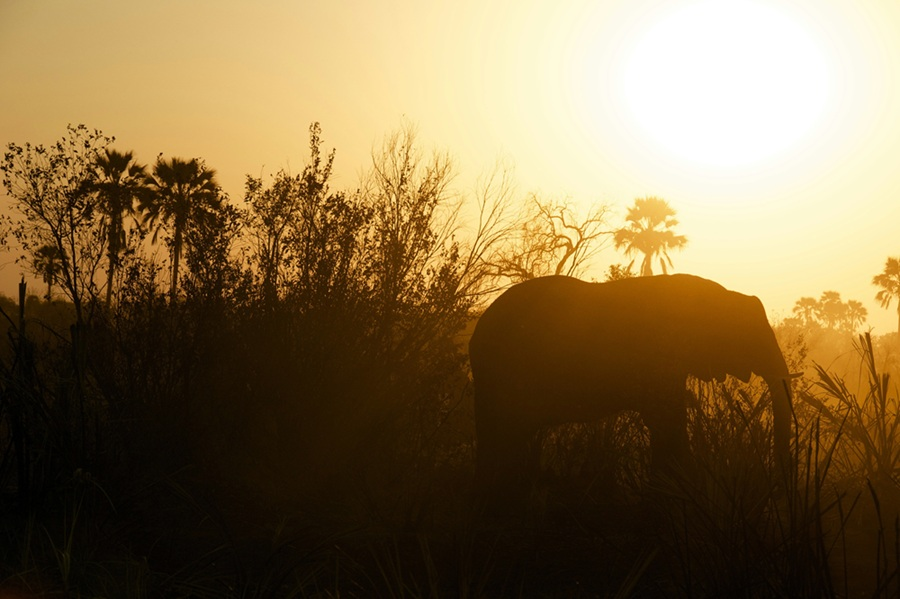

Welcome to Botswana
Immerse yourself in the wild beauty of Botswana, where breathtaking landscapes, majestic wildlife, and vibrant traditions come alive. From the Okavango Delta to the Kalahari Desert, every experience is unforgettable.


Immerse yourself in the wild beauty of Botswana, where breathtaking landscapes, majestic wildlife, and vibrant traditions come alive. From the Okavango Delta to the Kalahari Desert, every experience is unforgettable.

Experience Botswana’s rich heritage through music, dance, storytelling, and community traditions.
Discover elephants, lions, and diverse wildlife in Chobe National Park and the Okavango Delta.
Find essential travel tips, maps, and guidance to help plan your Botswana adventure.